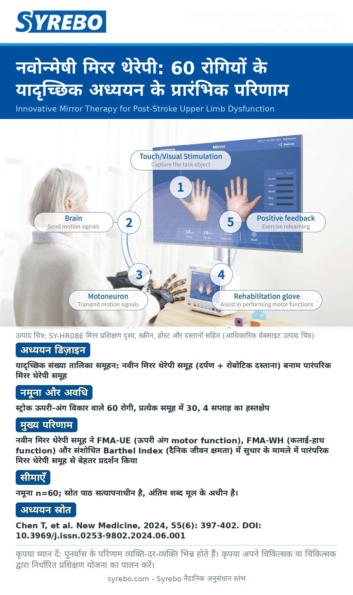

अंक 08 · चित्र संस्करण
नवोन्मेषी मिरर थेरेपी: 60 रोगियों के यादृच्छिक अध्ययन के प्रारंभिक परिणाम

स्रोत: Chen T, Liu S, Chen X, et al. Innovative mirror therapy for upper limb dysfunction after stroke. New Medicine, 2024, 55(6): 397-402. DOI: 10.3969/j.issn.0253-9802.2024.06.001.
सीमाएँ: नमूना n=60; स्रोत पाठ सत्यापनाधीन है, अंतिम शब्द मूल के अधीन है।
युक्ति: पुनर्वास के परिणाम व्यक्ति-दर-व्यक्ति भिन्न होते हैं। कृपया अपने चिकित्सक या चिकित्सक के मार्गदर्शन में विशिष्ट प्रशिक्षण योजना बनाएँ।
चीनी में पूरा लेख पढ़ेंRead in English